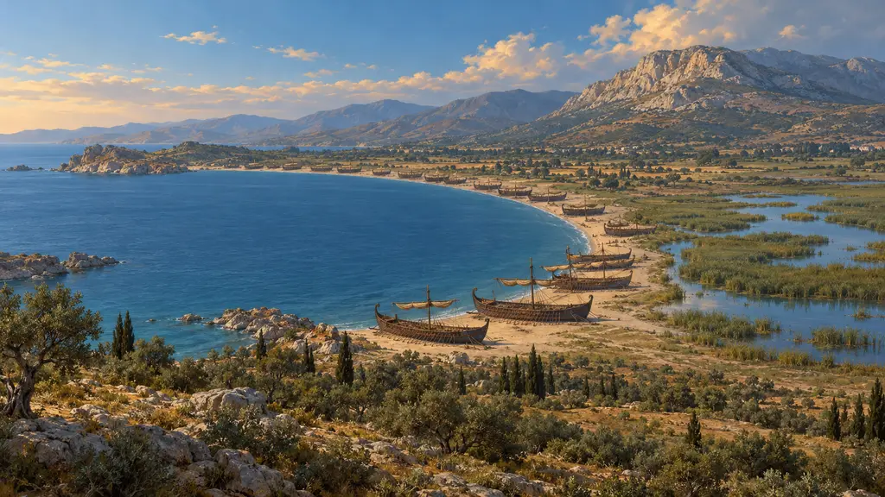
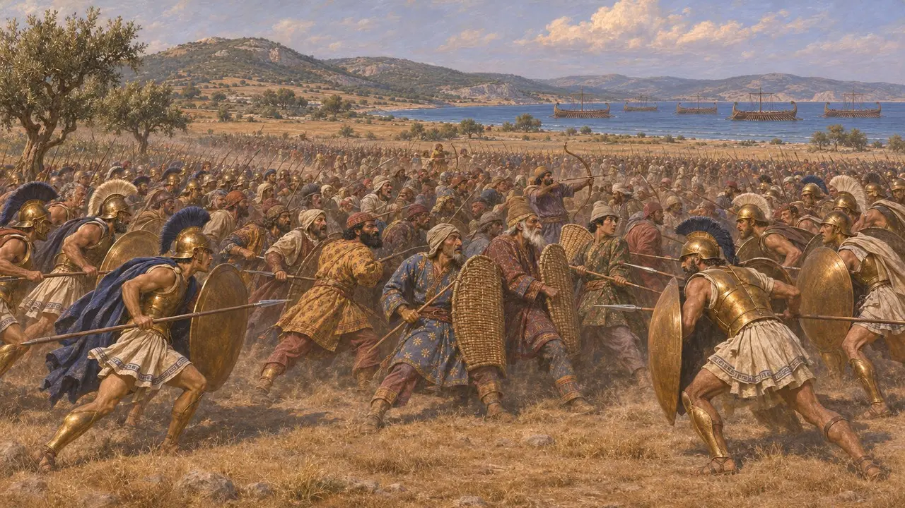
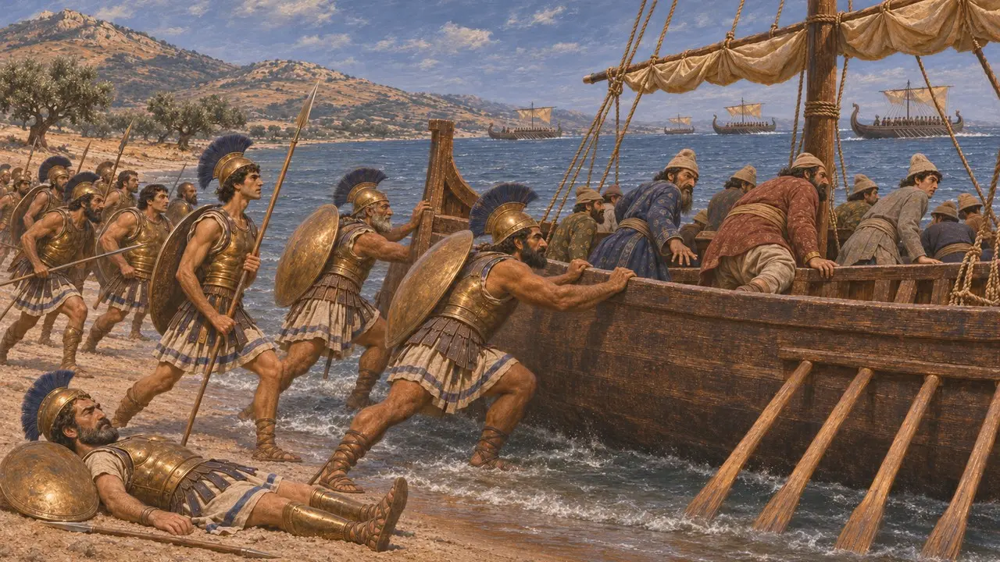
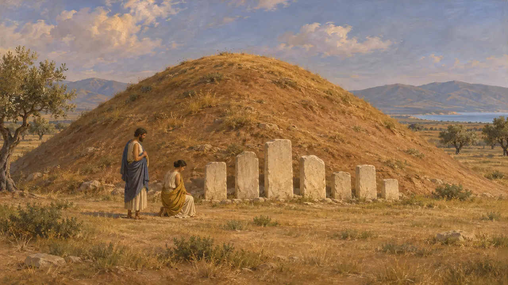
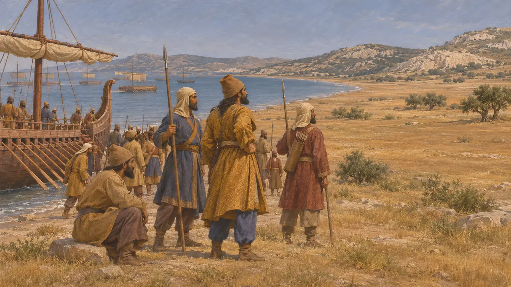
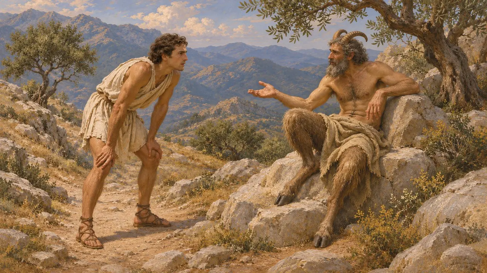

Maratona
Baía e planície na Ática, palco de um desembarque persa e de sua derrota em 490 AEC
No jogo: Nível 6: A Ponte de Barcos, Nível 8: A Baía de Maratona, Nível 9: O Canal
Maratona é uma baía e planície costeira no nordeste da Ática, a cerca de 40 quilômetros de Atenas. Em 490 AEC, uma força persa vinda pelo mar, sob o comando de Dátis e Artafernes, desembarcou ali, guiada pelo tirano ateniense exilado Hípias, e foi derrotada pelos atenienses e plateenses. Para os gregos, a batalha tornou-se uma história fundadora do orgulho ateniense; para a corte persa, foi um revés no limite extremo de uma campanha que já havia tomado Naxos e Erétria.
No jogo: A fase de Maratona se passa nesta baía e planície em 490 AEC. A nota da crônica do jogo segue Heródoto ao apontar Hípias como guia e os atenienses e plateenses como vencedores, e situa os mortos atenienses sob o Soros.

O desembarque e a batalha
Relato antigoHeródoto conta que a frota veio de Erétria e que Hípias escolheu Maratona porque a planície era propícia à cavalaria e ficava mais perto de Erétria. Os atenienses, liderados por dez generais e pelo polemarco Calímaco, receberam o reforço de toda a leva plateense, e Milcíades insistiu na batalha. Heródoto diz que eles atacaram em corrida por oito estádios; o centro, pouco profundo, cedeu, mas ambas as alas venceram e depois se voltaram juntas contra o centro persa.
Herodotus 6.102-113

Junto aos navios e depois
Relato antigoHeródoto conta que os atenienses perseguiram as tropas derrotadas até a praia e capturaram sete navios, e que Calímaco tombou no combate ali travado. O restante da frota contornou o Súnio rumo a Falero, mas os atenienses marcharam de volta antes e os persas retornaram à Ásia. Ele registra 6.400 mortos do lado persa e 192 atenienses, e diz que uma força espartana de 2.000 homens chegou após a batalha e foi ver os mortos.
Herodotus 6.114-120

O monte e as pedras
Nos registrosO Soros ainda se ergue na planície, com cerca de 9 metros de altura. Valerios Stais o escavou em 1890-91 e encontrou cinzas, ossos queimados e cerâmica datada aproximadamente da época da batalha, o que condiz com o relato de Pausânias sobre um túmulo ateniense na planície com os nomes dos mortos em estelas, listados por tribo. Uma lista de baixas da tribo Erecteida, encontrada em 2000 na vila de Herodes Ático em Loukou, no Peloponeso, provavelmente foi levada para lá a partir de Maratona.
V. Stais, excavation of the Soros, 1890-91; Pausanias 1.32.3

O que as fontes deixam em aberto
DisputadoNenhum texto persa menciona Maratona, de modo que cada detalhe vem de escritores gregos. Heródoto atribui à frota 600 trirremes, mas não dá o total do exército; autores posteriores o elevam a centenas de milhares, e as estimativas modernas são bem mais baixas. Ele também nada diz de claro sobre a cavalaria persa durante a batalha, e os historiadores ainda discutem se ela estava ausente, reembarcando ou simplesmente foi ineficaz, e por que os atenienses atacaram naquele momento.
Herodotus 6.95, 6.112; P. Krentz, The Battle of Marathon, 2010

Corredores e fantasmas
Lenda posteriorHeródoto conta que o mensageiro Fidípides correu até Esparta para pedir ajuda e encontrou o deus Pã no caminho. A história de um corredor que levou a notícia da vitória de Maratona a Atenas e morreu ao chegar só aparece séculos depois, em Plutarco e Luciano, e inspirou a corrida de maratona de 1896. Pausânias relata que o barulho da batalha era ouvido na planície à noite e que os habitantes locais honravam um herói, Equetleu, que lutou com um arado.
Herodotus 6.105-106; Plutarch, On the Glory of the Athenians 3; Lucian, A Slip of the Tongue in Greeting 3; Pausanias 1.32.4-5
Fontes
- Herodotus, Histories 6.94-120
- Pausanias 1.32.3-5
- P. Krentz, The Battle of Marathon, 2010
- P. Briant, From Cyrus to Alexander, 2002
- Plutarch, On the Glory of the Athenians 3